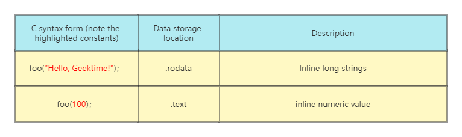

Quantities and Data in C Language
Quantities can be roughly divided into variables and constants, where a variable refers to a quantity whose value can be changed many times throughout the life cycle of an application; while a constant is the opposite, after being defined cannot be modified again.
Variable
The C language provides us with many language keywords to define the corresponding types of data. For example, in the following example, we successfully define multiple variables through the following steps:
- Use keywords such as
intto specify the specific type of data; - Set a name for the data;
- Use the “=” assignment operator to set a specific value for the data.
int x = -10;
char y = 'c';
double z = 2.0; The specific byte size occupied by variable types in the C language is also closely related to the hardware architecture where the program runs, which is also the difference between the C language and other high-level programming languages.
When the C language was originally designed, efficiency was a major consideration for the designers. Therefore, the C standard committee will refer to certain factors from the underlying hardware system when considering language design. For example, the C standard specifies that the size of the int type is the natural size recommended by the execution environment architecture. The so-called natural size can be simply understood as: for data of this size, the hardware system can process it with the highest efficiency. Therefore, different hardware systems have different corresponding natural sizes, which means that the same C variable type may have different sizes on different hardware systems.
In addition to being able to specify different data types for variables, in C, like most other statically typed languages, integer variables themselves need to be distinguished by their “signedness”. In short, there are actually two cases: if the type can only store positive numbers, it is an unsigned type; if both positive and negative numbers can be stored, it is a signed type. The difference in symbolism is beneficial to the optimization of the program for some specific scene requirements.
Constant
In C, literal values that are written directly into source code by inlining are generally referred to as “constants”.
A quantity defined with the const keyword in the same syntax as a variable is defined, isn’t it also a constant? How is it different from literal constants?
Generally speaking, in the C language, the variable definition statement modified with the const keyword means that for these variables, we cannot modify the corresponding value or the value pointed to by the pointer in the subsequent program. Therefore, we prefer to call them “read-only variables” rather than constants. Of course, in the appearance of the program, the two have one thing in common: its value is determined the first time it appears, and it cannot be modified in subsequent programs.
One of the most important differences between read-only variables and literal constants is that read-only variables decorated with const do not have the property of “constant expressions”, so they cannot be used to represent the size of fixed-length arrays or used in case statements. Constant expressions themselves are evaluated when the program is compiled, whereas the values of read-only variables are only known when the program is actually running. Also, compilers generally do not inline read-only variables, so their evaluation does not qualify as a constant expression.
#include <stdio.h>
int main(void) {
const int vx = 10;
const int vy = 10;
int arr[vx] = {1, 2, 3}; // [error1]
switch(vy) {
case vx: { // [error2]
printf("Value matched!");
break;
}
}
}Form of data storage
When a computer looks at data, it does not distinguish its symbolic nature, and the difference in symbolic nature is only reflected in the specific use of computer instructions when manipulating data.
Computers do not distinguish between the symbolic nature of data, the difference in symbolic nature is only determined by how the computer instructions use the data. For example, in the C language, when a type of variable is cast, the underlying data does not change substantially, but only the way the program interprets this part of the data changes. Take this example:
#include <stdio.h>
int main(void) {
signed char x = -10;
unsigned char y = (unsigned char)x;
printf("%d\n", y); // output: 246.
return 0;
}Among them, the signed integer variable x will store the signed number -10 in the complement form of the bit pattern 1111 0110, and if the sequence is interpreted according to the bit pattern of the unsigned integer, you can get the same result as the program running output , which is the unsigned integer value 246. In short, when the program performs type conversion, it will not affect the actual storage method of its underlying data.
In the C language, there is another noteworthy issue about data usage: the implicit conversion of variable types. As a weakly typed language, one of the major features of C language is that in some special cases, the actual type of the variable will be implicitly converted.
#include <stdio.h>
int main(void) {
int x = -10;
unsigned int y = 1;
if (x < y) {
printf("x is smaller than y.");
} else {
printf("x is bigger than y."); // this branch is picked!
}
return 0;
}In fact, in the above code, before the program logic actually enters the conditional statement, the type of the variable x is first implicitly converted to unsigned int , which is an unsigned integer. According to the interpretation rules of data types, the bit pattern originally stored in -10’s complement will be interpreted as a very large positive integer, and this number is much larger than 1.
Like integers, when C language performs type conversion on floating-point numbers (whether implicit or explicit), it does not change the underlying floating-point data, but only changes the interpretation of the corresponding bit sequence from floating-point numbers. for other ways. In C, the double-precision floating-point type double has the highest precedence as an implicit type conversion. When a variable of that type exists in an expression, the computer first converts all other participating variables to that type before evaluating the expression.
Where the data is stored
In the C language, through different syntax forms, we can define variables with different data types. These variables can be divided into local variables and global variables according to their definition locations. Further, by adding the static keyword, the variable can be marked as a static type to extend the lifetime of the variable and limit its visible scope to the current compilation unit, that is, the current source file; by adding the register keyword, it is also possible to suggest compilation The controller stores variable values in registers to improve its read and write performance.
For these variable forms mentioned above, the possible data storage locations are not the same. Based on the different syntax forms used when variables are defined, I have summarized the possible storage locations for variable data, as shown in the following table:

It should be noted that the identifiers starting with “.” in the table and later in this lecture refer to the corresponding Section structure.
- Initialized global variables and static variables：The values of these variables have the same life cycle as the application, and their values are usually stored in
.datain the processVAS (Virtual Address Space). Before an application is loaded and run normally, it needs to map the application code and the data of its related dependencies to a certain location in memory. This memory segment contains the data necessary for the normal operation of the application, that is, the process. the VAS. Section structures starting with “.”, such as.data, represent a specific location in the memory segment, and these Section structures provide various support for the normal operation of the application. - Local variables：Generally speaking, these variables will be stored in registers or the stack memory of the application VAS, which method is used depends on the choice of the compiler.
- Others：Uninitialized global variables and static variables, as well as data contained in memory blocks directly created by standard library functions such as malloc and calloc, have different storage locations. They are stored in the .bss and heap memory of the process VAS respectively. Different types of constant data are also stored differently. As shown in the following table, due to the immutable characteristics of the constants themselves, they will be selectively stored in the
.rodataand.textof the process VAS according to the size and type of the data. Among them,.rodatais used to store read-only data, and.textis usually used to store the code of the program itself.

The general rule is that if the inlined constant value is large, it will be stored in .rodata separately, otherwise it will be directly inlined into the application code as the literal value of machine instructions (such as the most common mov instruction) parameter.